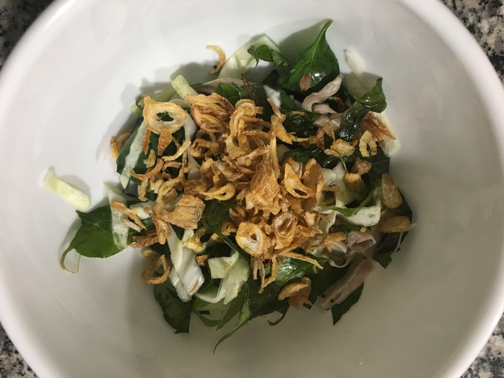

| Other | Meat | Veggie | Fruit |
|---|---|---|---|
| nuoc mam pha | chicken | cabbage | |
| pepper | any | hanh kho | |
| salt | onion | ||
| sugar | thai basil | ||
| vinegar | vietnamese mint |
| instructions |
|---|
| Chop veggies into thin strips |
| Add boiled chicken torn into strips |
| Add chopped Vietnamese mint/coriander (rau ram) and thai basil |
| Season with salt, pepper and a vinegar/sugar sauce, want sweet and sour |
| Eat goi with hanh kho and nuoc mam pha |